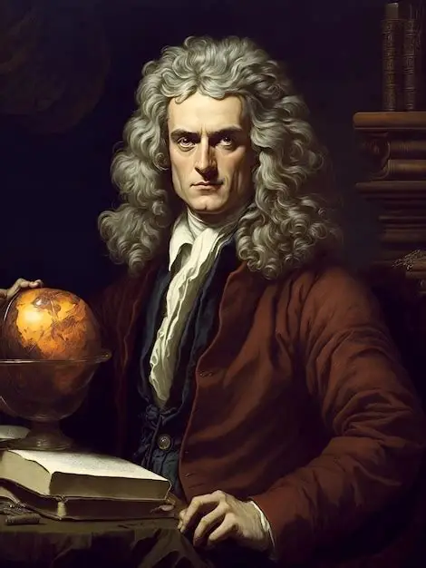

Matemático, físico e astrônomo inglês, Isaac Newton foi um dos principais nomes da história da ciência. Entre suas diversas contribuições, seus estudos sobre a luz transformaram a maneira como compreendemos as cores.
Olá! Sou Isaac Newton. Gostaria de conhecer um pouco sobre minhas descobertas? Selecione uma das perguntas para começarmos.
Em 1666, realizei experimentos utilizando um prisma de vidro para estudar o comportamento da luz solar. Quer observar o que acontece?
Aguardando experimento...